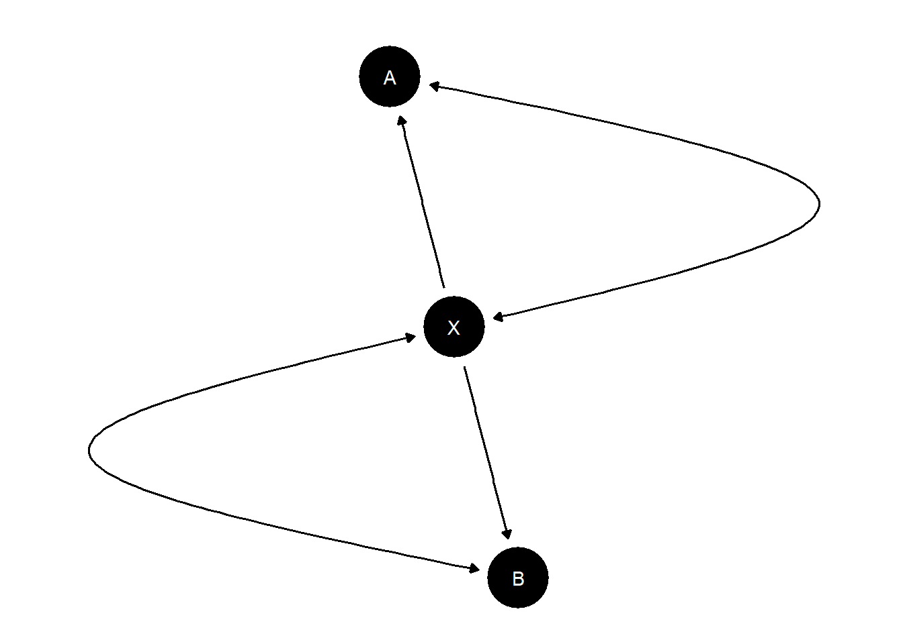

Chapter 3 Defining models
3.1 Getting going
Model definition involves:
- Defining a causal structure (required)
- Indicating causal type restrictions (optional)
- Indicating possible unobserved confounding (optional)
- Providing priors and parameters (required, but defaults are provided)
We discuss these in turn.
3.2 Causal structure
A simple model is defined in one step using a dagitty syntax in which the structure of the model is provided as a statement.
For instance:
The statement (in quotes) provides the names of nodes. An arrow (“->” or “<-”) connecting nodes indicates that one node is a potential cause of another (that is, whether a given node is a “parent” or “child” of another; see section 12.1.1).
Formally a statement like this is interpreted as:
- Functional equations:
- \(Y = f(M, X, \theta^Y)\)
- \(M = f(X, \theta^M)\)
- \(X = \theta^X\)
- Distributions on shocks:
- \(\Pr(\theta^i = \theta^i_k) = \lambda^i_k\)
- Independence assumptions:
- \(\theta_i \perp\!\!\! \perp \theta_j, i\neq j\)
where function \(f\) maps from the set of possible values of the parents of \(i\) to values of node \(i\) given \(\theta^i\). Units with the same value on \(\theta^i\) react in the same way to the parents of \(i\). Indeed in this discrete world we think of \(\theta^i\) as fully dictating the functional form of \(f\), indicating what outcome is observed on \(i\) for any value of \(i\)’s parents.
In addition, it is also possible to indicate “unobserved confounding”, that is, the presence of an unobserved variable that might influence observed variables. In this case condition 3 above is relaxed. We describe how this is done in greater detail in section 3.4.
For instance:
Note that different segments of the graph can be included in the same statement, separated by semicolons. There are many ways to write the same model. Here is the same model written once using a three part statement and once as a chain (with the same node appearing possibly more than once).
Once defined, a model can be graphed (we use the dagitty package for this):
Figure 3.1: A plotted model. Curved double headed arrows indicate unobserved confounding
This is useful to check that you have written the structure down correctly.
When a model is defined, a set of objects are generated. These are the key quantities that are used for all inference. We discuss each in turn. (See the notation guide—section 12—for definitions and code pointers).
3.2.1 Nodal types
Two units have the same nodal type at node \(Y\), \(\theta^Y\), if their outcome at \(Y\) responds in the same ways to parents of \(Y\).
A node with \(k\) parents has \(2^{2^k}\) nodal types. The reason is that with \(k\) parents, there are \(2^k\) possible values of the parents and so \(2^{2^k}\) ways to respond to these possible parental values. As a convention we say that a node with no parents has two nodal types (0 or 1).
When a model is created the full set of “nodal types” is identified. These are stored in the model. The subscripts become very long and hard to parse for more complex models so the model object also includes a guide to interpreting nodal type values. You can see them like this.
$X
[1] "0" "1"
$Y
[1] "00" "10" "01" "11"
attr(,"interpret")
attr(,"interpret")$X
node position display interpretation
1 X NA X0 X = 0
2 X NA X1 X = 1
attr(,"interpret")$Y
node position display interpretation
1 Y 1 Y[*]* Y | X = 0
2 Y 2 Y*[*] Y | X = 1Note that we use \(\theta^j\) to indicate nodal types because for qualitative analysis the nodal types are often the parameters of interest.
3.2.2 Causal types
Causal types are collections of nodal types. Two units are of the same causal type if they have the same nodal type at every node. For example in a \(X \rightarrow M \rightarrow Y\) model, \(\theta = (\theta^X_0, \theta^M_{01}, \theta^Y_{10})\) is a type that has \(X=0\), \(M\) responds positively to \(X\), and \(Y\) responds positively to \(M\).
When a model is created, the full set of causal types is identified. These are stored in the model object:
A B
A0.B00 0 00
A1.B00 1 00
A0.B10 0 10
A1.B10 1 10
A0.B01 0 01
A1.B01 1 01
A0.B11 0 11
A1.B11 1 11A model with \(n_j\) nodal types at node \(j\) has \(\prod_jn_j\) causal types. Thus the set of causal types can be large. In the model \((X\rightarrow M \rightarrow Y \leftarrow X)\) there are \(2\times 4\times 16 = 128\) causal types.
Knowledge of a causal type tells you what values a unit would take, on all nodes, absent an intervention. For example for a model \(X \rightarrow M \rightarrow Y\) a type \(\theta = (\theta^X_0, \theta^M_{01}, \theta^Y_{10})\) would imply data \((X=0, M=0, Y=1)\). (The converse of this, of course, is the key to updating: observation of data \((X=0, M=0, Y=1)\) result in more weight placed on \(\theta^X_0\), \(\theta^M_{01}\), and \(\theta^Y_{10})\).)
3.2.3 Parameters dataframe
When a model is created, CausalQueries attaches a “parameters dataframe” which keeps track of model parameters, which belong together in a family, and how they relate to causal types. This becomes especially important for more complex models with confounding that might involve more complicated mappings between parameters and nodal types. In the case with no confounding the nodal types are the parameters; in cases with confounding you generally have more parameters than nodal types.
For instance:
| param_names | node | gen | param_set | nodal_type | given | param_value | priors |
|---|---|---|---|---|---|---|---|
| X.0 | X | 1 | X | 0 | 0.50 | 1 | |
| X.1 | X | 1 | X | 1 | 0.50 | 1 | |
| Y.00 | Y | 2 | Y | 00 | 0.25 | 1 | |
| Y.10 | Y | 2 | Y | 10 | 0.25 | 1 | |
| Y.01 | Y | 2 | Y | 01 | 0.25 | 1 | |
| Y.11 | Y | 2 | Y | 11 | 0.25 | 1 |
Each row in the dataframe corresponds to a single parameter.
The columns of the parameters data frame are understood as follows:
param_namesgives the name of the parameter, in shorthand. For instance the parameter \(\lambda^X_0 = \Pr(\theta^X = \theta^X_0)\) haspar_nameX.0. See section 12 for a summary of notation.param_valuegives the (possibly default) parameter values. These are probabilities.
param_setindicates which parameters group together to form a simplex. The parameters in a set have parameter values that sum to 1. In this example \(\lambda^X_0 + \lambda^X_1 = 1\).nodeindicates the node associated with the parameter. For parameter\lambda^X_0this is \(X\).nodal_typeindicates the nodal types associated with the parameter.genindicates the place in the partial causal ordering (generation) of the node associated with the parameterpriorsgives (possibly default) Dirichlet priors arguments for parameters in a set. Values of 1 (.5) for all parameters in a set implies uniform (Jeffrey’s) priors over this set.
Below we will see examples where the parameter dataframe helps keep track of parameters that are created when confounding is added to a model.
3.2.4 Parameter matrix
The parameters dataframe keeps track of parameter values and priors for parameters but it does not provide a mapping between parameters and the probability of causal types.
The parameter matrix (\(P\) matrix) is added to the model to provide this mapping. The \(P\) matrix has a row for each parameter and a column for each causal type. For instance:
| X0.Y00 | X1.Y00 | X0.Y10 | X1.Y10 | X0.Y01 | X1.Y01 | X0.Y11 | X1.Y11 | |
|---|---|---|---|---|---|---|---|---|
| X.0 | 1 | 0 | 1 | 0 | 1 | 0 | 1 | 0 |
| X.1 | 0 | 1 | 0 | 1 | 0 | 1 | 0 | 1 |
| Y.00 | 1 | 1 | 0 | 0 | 0 | 0 | 0 | 0 |
| Y.10 | 0 | 0 | 1 | 1 | 0 | 0 | 0 | 0 |
| Y.01 | 0 | 0 | 0 | 0 | 1 | 1 | 0 | 0 |
| Y.11 | 0 | 0 | 0 | 0 | 0 | 0 | 1 | 1 |
The probability of a causal type is given by the product of the parameters values for parameters whose row in the \(P\) matrix contains a 1.
Below we will see examples where the \(P\) matrix helps keep track of parameters that are created when confounding is added to a model.
3.3 Setting restrictions
When a model is defined, the complete set of possible causal relations are identified. This set can be very large.
Sometimes for theoretical or practical reasons it is useful to constrain the set of types. In CausalQueries this is done at the level of nodal types, with restrictions on causal types following from restrictions on nodal types.
For instance to impose an assumption that \(Y\) is not decreasing in \(X\) we generate a restricted model as follows:
or:
Viewing the resulting parameter matrix we see that both the set of parameters and the set of causal types are now restricted:
Rows are parameters, grouped in parameter sets
Columns are causal types
Cell entries indicate whether a parameter probability is used
in the calculation of causal type probability
X0.Y00 X1.Y00 X0.Y01 X1.Y01 X0.Y11 X1.Y11
X.0 1 0 1 0 1 0
X.1 0 1 0 1 0 1
Y.00 1 1 0 0 0 0
Y.01 0 0 1 1 0 0
Y.11 0 0 0 0 1 1
param_set (P)
Here and in general, setting restrictions typically involves using causal syntax; see Section 12.2 for a guide the syntax used by CausalQueries.
Note:
- Restrictions have to operate on nodal types: restrictions on levels of endogenous nodes aren’t allowed. This, for example, will fail:
make_model("X->Y") %>% set_restrictions(statement = "(Y == 1)"). The reason is that it requests a correlated restriction on nodal types forXandYwhich involves undeclared confounding. - Restrictions implicitly assume fixed values for all parents of a node. For instance:
make_model("A -> B <- C") %>% set_restrictions("(B[C=1]==1)")is interpreted as shorthand for the restriction"B[C = 1, A = 0]==1 | B[C = 1, A = 1]==1". - To place restrictions on multiple nodes at the same time, provide these as a vector of restrictions. This is not permitted:
set_restrictions("Y[X=1]==1 & X==1"), since it requests correlated restrictions. This however is allowed:set_restrictions(c("Y[X=1]==1", "X==1")).
- Use the
keepargument to indicate whether nodal types should be dropped (default) or retained. - Restrictions can be set using nodal type labels.
make_model("S -> C -> Y <- R <- X; X -> C -> R") %>% set_restrictions(labels = list(C = "C1000", R = "R0001", Y = "Y0001"), keep = TRUE) - Wild cards can be used in nodal type labels:
make_model("X->Y") %>% set_restrictions(labels = list(Y = "Y?0"))
3.4 Allowing confounding
(Unobserved) confounding between two nodes arises when the nodal types for the nodes are not independently distributed.
In the \(X \rightarrow Y\) graph, for instance, there are 2 nodal types for \(X\) and 4 for \(Y\). There are thus 8 joint nodal types (or causal types):
| \(\theta^X\) | ||||
|---|---|---|---|---|
| 0 | 1 | Sum | ||
| \(\theta^Y\) | 00 | \(\Pr(\theta^X_0, \theta^Y_{00})\) | \(\Pr(\theta^X_1, \theta^Y_{00})\) | \(\Pr(\theta^Y_{00})\) |
| 10 | \(\Pr(\theta^X_0, \theta^Y_{10})\) | \(\Pr(\theta^X_1, \theta^Y_{10})\) | \(\Pr(\theta^Y_{10})\) | |
| 01 | \(\Pr(\theta^X_0, \theta^Y_{01})\) | \(\Pr(\theta^X_1, \theta^Y_{01})\) | \(\Pr(\theta^Y_{01})\) | |
| 11 | \(\Pr(\theta^X_0, \theta^Y_{11})\) | \(\Pr(\theta^X_1, \theta^Y_{11})\) | \(\Pr(\theta^Y_{11})\) | |
| Sum | \(\Pr(\theta^X_0)\) | \(\Pr(\theta^X_1)\) | 1 |
This table has 8 interior elements and so an unconstrained joint distribution would have 7 degrees of freedom. A no confounding assumption means that \(\Pr(\theta^X | \theta^Y) = \Pr(\theta^X)\), or \(\Pr(\theta^X, \theta^Y) = \Pr(\theta^X)\Pr(\theta^Y)\). In this case we just put a distribution on the marginals and there would be 3 degrees of freedom for \(Y\) and 1 for \(X\), totaling \(4\) rather than 7.
set_confounds lets you relax this assumption by increasing the number of parameters characterizing the joint distribution. Using the fact that \(\Pr(A,B) = \Pr(A)\Pr(B|A)\) new parameters are introduced to capture \(\Pr(B|A=a)\) rather than simply \(\Pr(B)\).
The simplest way to allow for confounding is by adding a bidirected edge, such as via: set_confound(model, list("X <-> Y")). In this case the descendant node has a distribution conditional on the value of the ancestor node. To wit:
| param_names | node | gen | param_set | nodal_type | given | param_value | priors |
|---|---|---|---|---|---|---|---|
| X.0 | X | 1 | X | 0 | 0.50 | 1 | |
| X.1 | X | 1 | X | 1 | 0.50 | 1 | |
| Y.00_X.0 | Y | 2 | Y.X.0 | 00 | X.0 | 0.25 | 1 |
| Y.10_X.0 | Y | 2 | Y.X.0 | 10 | X.0 | 0.25 | 1 |
| Y.01_X.0 | Y | 2 | Y.X.0 | 01 | X.0 | 0.25 | 1 |
| Y.11_X.0 | Y | 2 | Y.X.0 | 11 | X.0 | 0.25 | 1 |
| Y.00_X.1 | Y | 2 | Y.X.1 | 00 | X.1 | 0.25 | 1 |
| Y.10_X.1 | Y | 2 | Y.X.1 | 10 | X.1 | 0.25 | 1 |
| Y.01_X.1 | Y | 2 | Y.X.1 | 01 | X.1 | 0.25 | 1 |
| Y.11_X.1 | Y | 2 | Y.X.1 | 11 | X.1 | 0.25 | 1 |
We see here that there are now two parameter families for parameters associated with the node \(Y\). Each family captures the conditional distribution of \(Y\)’s nodal types, given \(X\). For instance the parameter Y01_X.1 can be interpreted as \(\Pr(\theta^Y = \theta^Y _{01} | X=1)\).
To see exactly how the parameters map to causal types we can view the parameter matrix:
| X0.Y00 | X1.Y00 | X0.Y10 | X1.Y10 | X0.Y01 | X1.Y01 | X0.Y11 | X1.Y11 | |
|---|---|---|---|---|---|---|---|---|
| X.0 | 1 | 0 | 1 | 0 | 1 | 0 | 1 | 0 |
| X.1 | 0 | 1 | 0 | 1 | 0 | 1 | 0 | 1 |
| Y.00_X.0 | 1 | 0 | 0 | 0 | 0 | 0 | 0 | 0 |
| Y.10_X.0 | 0 | 0 | 1 | 0 | 0 | 0 | 0 | 0 |
| Y.01_X.0 | 0 | 0 | 0 | 0 | 1 | 0 | 0 | 0 |
| Y.11_X.0 | 0 | 0 | 0 | 0 | 0 | 0 | 1 | 0 |
| Y.00_X.1 | 0 | 1 | 0 | 0 | 0 | 0 | 0 | 0 |
| Y.10_X.1 | 0 | 0 | 0 | 1 | 0 | 0 | 0 | 0 |
| Y.01_X.1 | 0 | 0 | 0 | 0 | 0 | 1 | 0 | 0 |
| Y.11_X.1 | 0 | 0 | 0 | 0 | 0 | 0 | 0 | 1 |
Importantly, the \(P\) matrix works as before, despite confounding. We can assess the probability of causal types by multiplying the probabilities of the constituent parameters.
Note:
Ordering of conditioning can also be controlled however via
set_confound(model, list(X = "Y"))in which case X is given a distribution conditional on nodal types of Y.More specific confounding statements are also possible using causal syntax.
- A statement of the form
list(X = "Y[X=1]==1")can be interpreted as: “Allow X to have a distinct conditional distribution when \(Y\) has types that involve \(Y(do(X=1))=1\).” In this case, nodal types for \(Y\) would continue to have 3 degrees of freedom. But there would be parameters assigning the probability of \(X\) when \(\theta^Y = \theta^Y_{01}\) or \(\theta^Y = \theta^Y_{11}\) and other parameters for residual cases. Thus 6 degrees of freedom in all. - Similarly a statement of the form
list(Y = "X==1")can be interpreted as: “Allow Y to have a distinct conditional distribution when X=1.” In this case there would be two distributions over nodal types for Y, producing 2*3 = 6 degrees of freedom. Nodal types for X would continue to have 1 degree of freedom. Thus 7 degrees of freedom in all, corresponding to a fully unconstrained joint distribution.
- A statement of the form
Unlike nodal restrictions, a confounding relation can involve multiple nodal types simultaneously. For instance
make_model("X -> M -> Y") %>% set_confound(list(X = "Y[X=1] > Y[X=0]"))allows for a parameter that renders \(X\) more or less likely depending on whether \(X\) has a positive effect on \(Y\) whether it runs through a positive or a negative effect on \(M\).The parameters needed to capture confounding relations depend on the direction of causal arrows. For example compare:
make_model("A -> W <- B ; A <-> W; B <-> W")$parameters_df %>% dimIn this case we can decompose shocks on \(A, B, W\) via: \(\Pr(\theta^A, \theta^B, \theta^W) = \Pr(\theta^W | \theta^A, \theta^A)\Pr(\theta^A)\Pr(\theta^B)\), and we have 68 parameters.make_model("A <- W -> B ; A <-> W; B <-> W")$parameters_df %>% dimIn this case we have \(\Pr(\theta^A, \theta^B, \theta^W) = \Pr(\theta^A | \theta^W)\Pr(\theta^B|\theta^W)\Pr(\theta^W)\) and just has just 18 parameters.
When confounding is added to a model, a dataframe, confounds_df is created and added to the model, recording which variables involve confounding. This is then used for plotting:

Sometimes the confounds_df can highlight nonobvious confounding relations:
NULLIn this example, the confounding statement implies confounding between \(X\) and \(M\) even though \(M\) is not included explicitly in the confound statement (the reason is that \(X\) can have a positive effect on \(Y\) by having a positive effect on \(M\) and this in turn having a positive effect on \(Y\) or by having a negative effect on \(M\) and this in turn having a negative effect on \(Y\)).
3.5 Setting Priors
Priors on model parameters can be added to the parameters dataframe. The priors are interpreted as alpha arguments for a Dirichlet distribution. They can be seen using get_priors.
X.0 X.1 Y.00 Y.10 Y.01 Y.11
1 1 1 1 1 1 Here the priors have not been specified and so they default to 1, which corresponds to uniform priors.
Alternatively you could set jeffreys priors like this:
No specific parameters to alter values for specified. Altering all parameters. X.0 X.1 Y.00 Y.10 Y.01 Y.11
0.5 0.5 0.5 0.5 0.5 0.5 3.5.1 Custom priors
Custom priors are most simply specified by being added as a vector of numbers using set_priors. For instance:
X.0 X.1 Y.00 Y.10 Y.01 Y.11
1 2 3 4 5 6 The priors here should be interpreted as indicating:
- \(\alpha_X = (1,2)\), which implies a distribution over \((\lambda^X_0, \lambda^X_1)\) centered on \((1/3, 2/3)\).
- \(\alpha_Y = (3,4,5,6)\), which implies a distribution over \((\lambda^Y_{00}, \lambda^Y_{10}, \lambda^Y_{01} \lambda^Y_{11})\) centered on \((3/18, 4/18, 5/18, 6/18)\).
For larger models it can be hard to provide priors as a vector of numbers and so set_priors can allow for more targeted modifications of the parameter vector. For instance:
X.0 X.1 Y.00 Y.10 Y.01 Y.11
1 1 1 1 3 1 See ?set_priors and ?make_priors for many examples.
3.5.2 Prior warnings
“Flat” priors over parameters in a parameter family put equal weight on each nodal type, but this in turn can translate into strong assumptions on causal quantities of interest.
For instance in an \(X \rightarrow Y\) model model in which negative effects are ruled out, the average causal effect implied by “flat” priors is \(1/3\). This can be seen by querying the model:
make_model("X -> Y") %>%
set_restrictions(decreasing("X", "Y")) %>%
query_model("Y[X=1] - Y[X=0]", n_draws = 10000) %>%
kable| model | query | given | using | case_level | mean | sd | cred.low.2.5% | cred.high.97.5% |
|---|---|---|---|---|---|---|---|---|
| model_1 | Y[X=1] - Y[X=0] | - | parameters | FALSE | 0.3333 | NA | 0.3333 | 0.3333 |
More subtly the structure of a model, coupled with flat priors, has substantive importance for priors on causal quantities. For instance with flat priors, priors on the probability that \(X\) has a positive effect on \(Y\) in the model \(X \rightarrow Y\) is centered on \(1/4\). But priors on the probability that \(X\) has a positive effect on \(Y\) in the model \(X \rightarrow M \rightarrow Y\) is centered on \(1/8\).
Again, you can use query_model to figure out what flat (or other) priors over parameters imply for priors over causal quantities:
| model | query | given | using | case_level | mean | sd | cred.low.2.5% | cred.high.97.5% |
|---|---|---|---|---|---|---|---|---|
| model_1 | Y[X=1] > Y[X=0] | - | parameters | FALSE | 0.25 | NA | 0.25 | 0.25 |
| model | query | given | using | case_level | mean | sd | cred.low.2.5% | cred.high.97.5% |
|---|---|---|---|---|---|---|---|---|
| model_1 | Y[X=1] > Y[X=0] | - | parameters | FALSE | 0.125 | NA | 0.125 | 0.125 |
Caution regarding priors is particularly important when models are not identified, as is the case for many of the models considered here. In such cases, for some quantities, the marginal posterior distribution can be the same as the marginal prior distribution (Poirier 1998).
The key point here is to make sure you do not fall into a trap of thinking that “uninformative” priors make no commitments regarding the values of causal quantities of interest. They do, and the implications of flat priors for causal quantities can depend on the structure of the model. Moreover for some inferences from causal models the priors can matter a lot even if you have a lot of data. In such cases it can be helpful to know what priors on parameters imply for priors on causal quantities of interest (by using query_model) and to assess how much conclusions depend on priors (by comparing results across models that vary in their priors).
3.6 Setting Parameters
By default, models have a vector of parameter values included in the parameters_df dataframe. These are useful for generating data, or for situations, such as process tracing, when one wants to make inferences about causal types (\(\theta\)), given case level data, under the assumption that the model is known.
Consider the causal model below. It has two parameter sets, X and Y, with six nodal types, two corresponding to X and four corresponding to Y. The key feature of the parameters is that they must sum to 1 within each parameter set.
X.0 X.1 Y.00 Y.10 Y.01 Y.11
0.50 0.50 0.25 0.25 0.25 0.25 Setting parameters can be done using a similar syntax as set_priors. The main difference is that when a given value is altered the entire set must still always sum to 1. The example below illustrates a change in the value of the parameter \(Y\) in the case it is increasing in \(X\). Here nodal type Y.Y01 is set to be .5, while the other nodal types of this parameter set were renormalized so that the parameters in the set still sum to one.
make_model("X->Y") %>%
set_parameters(statement = "Y[X=1] > Y[X=0]", parameters = .5) %>%
get_parameters X.0 X.1 Y.00 Y.10 Y.01 Y.11
0.5000 0.5000 0.1667 0.1667 0.5000 0.1667 Alternatively, instead of setting a particular new value for a parameter you can set a value that then gets renormalized along with all other values. In the example below, if we begin with vector (.25, .25, .25, .25) and request a value of Y.Y01 of .5, without requesting a renormalization of other variables, then we get a vector (.2, .2, .4, .2) which is itself a renormalization of (.25, .25, .5, .25).
make_model("X->Y") %>%
set_parameters(statement = "Y[X=1] > Y[X=0]", parameters = .5, normalize=FALSE) %>%
get_parameters X.0 X.1 Y.00 Y.10 Y.01 Y.11
0.5 0.5 0.2 0.2 0.4 0.2 This normalization behavior can mean that you can control parameters better if they are set in a single step rather than in multiple steps, compare:
make_model('X -> Y') %>%
make_parameters(statement = c('Y[X=1]<Y[X=0] | Y[X=1]>Y[X=0]'), parameters = c(1/2, 0)) X.0 X.1 Y.00 Y.10 Y.01 Y.11
0.50 0.50 0.25 0.50 0.00 0.25 Here the .6 in the second vector arises because a two step process is requested (statement is of length 2) and the vector first becomes (1/6, 1/2, 1/6, 1/6) and then becomes (.2, .6, 0, .2) which is a renormalization of (1/6, 1/2, 0, 1/6).
If in doubt, check parameter values.
See ? set_parameters for some handy ways to set parameters either manually (define) or using prior_mean, prior_draw, posterior_mean, posterior_draw.